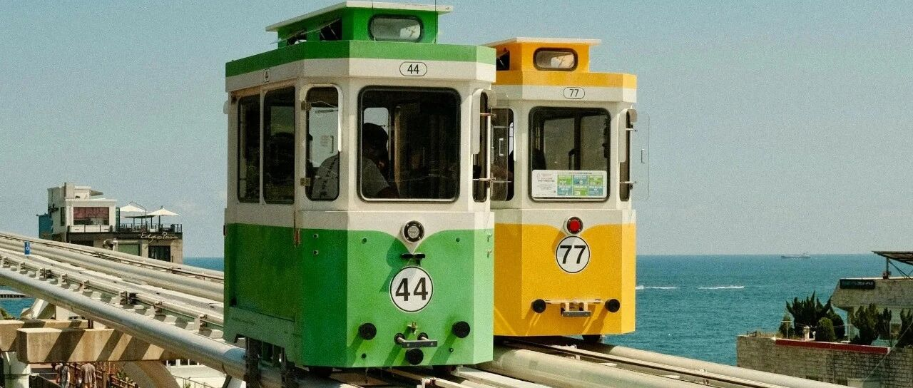

很重要的一些调整~
我媳妇的账户做了一些小调整。
昨天29.71卖出东财后，在评论区第一时间更新。东财做波段，包括原因，之前写过了，不再重复。
临近收盘时，买入恒生互联网和恒生科技。
之前逢高减仓了一些恒生科技和恒生医药，现在价格回落不少，就再买入放着。
现在她这个账户，除了少量沪深300和中证500，其余清一色恒生科技、恒生医药、恒生互联网。
她这个账户近十年没怎么操作，忙着生娃带娃，所以亏损严重。我近一个多月偶尔帮她操作一二，希望私房钱能回回血。
港股方面，我持仓的腾讯还有大几万股，目前都是负成本阶段，除了之前逢高减仓在480一部分，之后都没有打算操作，再等等看。
未来半年，预计是很多政策和措施的密集发布区，毕竟对岸的懂王上台后，我们也会有对冲他（利空）的政策，这是利好。
尤其是大厂，之前被限制“资本无序扩张”，未来一段时间，应该会鼓励它们起来挑大梁、做示范。
所以这方面，我重点布防一二，希望我媳妇那个血亏的账户能多回回血。
美联储降息了，25个基点。
现在的利率，在4.5-4.75%之间，未来随着降息，利率会越来越低，我个人预计明年底后年初，大概会低到3%左右，进入2字头阶段。
前些日子，我用一部分定存和美债锁定了未来几年相对固定的收益。
美股又大涨，纳指涨了1.51%，标普500指数也涨了0.75%，均创下历史新高。
这两个我已经负成本了，未来很长一段时间内不会再卖出，看有没有机会等到暴跌抄底捞一把。
英伟达涨到了148.88美元。在我的仓位占比中从31%+涨到了32%，同样也是负成本，未来没打算卖了，等机会看能不能捞一把。
特斯拉涨到296.9美元，我感觉差不多了，因此把3倍做多的单清了，收益还行。
特斯拉和大饼一样，是川普上台利好的资产，因此市场会有一波热炒，可以短期内上杠杆去放大收益，然后差不多了就撤。
谷歌股票也到了182美元。
之前说过，如果是短线，就在财报数据发布前后套利，即财报发布前埋伏进去，设置止盈，等达到预期就撤。
如果是中长线，等财报发布后，趁回落，捡进来。谷歌这次也是如此，财报发布后，有几天的回落，然后就往上涨到182了。
我是习惯中长线的，以年为时间单位去持有，偶尔在财报发布前后做点短期套利。
meta回到了591.7美元。我在572和560加仓后，没能再继续加仓，因为它不掉到550……
目前Meta的仓位占比大概是2.12%，比之前1%翻倍了，我的成本也升到了293，超过持仓的台积电79+美元的成本，跃升第一。
未来有机会会继续买入Meta，目标是550以下加仓，不会硬上，有机会就买，没有就继续等，我有的是时间和耐心。
台积电站回201美元，暂时摆脱多空博弈区。整体的走势和预计的一样，没有出现偏差。
对于台积电，我个人还是很好看的，79+美元的成本，未来一段时间不会卖出，只会看有没有机会逢低买入，但现在能吸引我的价格，短时间内预计不会出现。
苹果227美元，涨回来了一些，但还没有修复230+的价位段。
这是我买的第二只美股，也是给我带来过丰厚回报的，所以我一直持有到现在，14年了，仓位越加越重。
微软修复425+美元，财报发布后不久，微软开始下跌，一度下探到405美元，我没有操作。
作为买入已17年的第一只美股，这货在最初的三年给我狠狠上了一课，写过。从那之后，我学会了投资中最重要的耐心。
亚马逊站上210美元，我还是挺看好亚马逊的，如果要长期持有的，等未来几个月，特别是懂王发布一些和关税有关的信息，到时预计会有很不错的买入节点。
美股七巨头+台积电+纳指&标普500，我目前都已经完成自己相对比较满意的仓位。
未来的几个月内，目标是Meta的仓位比重要增加到4%，耐心等，看有没有合适的机会。
目前的仓位是7.5成，还有空间，我最多的时候，加到过8-8.3成。
投资最重要的是耐心、资金还有勇气。耐心不用说了，勇气我几次加仓和抄底都是具体体现，至于资金，这个其实非常重要。
资金体量大，一个点的涨幅收益，就远超资金体量小10个点的收益。
我是很强调资金体量的，资金体量大，随便0.5个点的波动，都是几位数波动，因此也就更注重资金的安全和稳定，会在持仓中更倾向于做低成本去长期持有。
2-3-3-2方式，也是根据自己的资金体量来量身定做的，不一定适用所有人，每个人要根据自己的情况做一些调整，适合自己的才是最好的。
这篇信息量比较密集，老手一看就懂，新手慢慢琢磨。
我这两天不在国内，发文由助理代发，所以回复大家的留言可能有所延迟。
就这样吧。